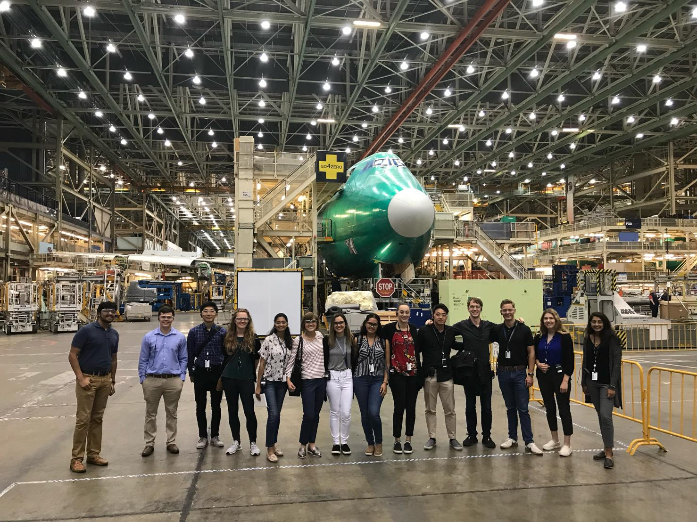
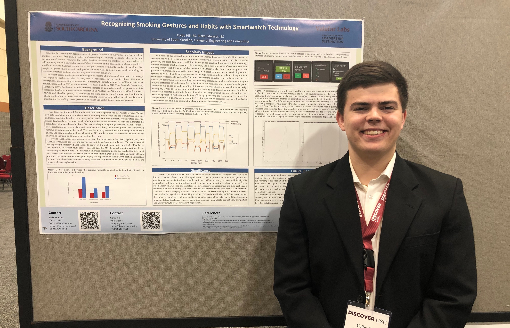

Boeing
This past summer I had the opportunity to work at Boeing as a Software Engineering Intern with the Identity & Directory Services team.
I collaborated with team members, assisted the creation of coding standards for the Identity Directory Access Portal,
and gained extensive experience with Software Development, Cloud Computing, Web Design, and Information Security.
During my internship I was able to modernize an existing Identity management application by migrating to Pivotal Cloud, creating CI/CD pipelines, migrating the build to Gradle, and updating the UI.
I was also able to build from scratch a homepage for the IDAP team to serve as a centralized location for accessing all IDAP services, applications, and announcements.
Near the end of my internship I was able to push both of these applications into production which was an empowering and invaluable experience.

University of South Carolina
Throughout my Sophomore and Junior years at the University of South Carolina I worked as a Research Assistant in the Computational Biology Lab.
My research project sought to gather organic smoking data by using smartwatch technology to unobtrusivly detect and quickly characterize smoking behaviors.
During my time as a reserach assistant I gained practical knowledge in Mobile Development, Multithreading, Transfer Protocols, Machine Learning, Cloud Storage, and Signal Processing.
Additionally, I attained knowledge in Android and Wear OS development with a focus on accelerometer monitoring, communication and data transfer protocols, and local data storage.
During my Junior year I also worked as a teaching assistant for Algorithmic Design I/II courses where I was able to extend my passion for working with others as well as develop my leadership skills.
I conducted labs for 25-30 students bi-weekly and assisted in teaching students about programming fundamentals and Java.